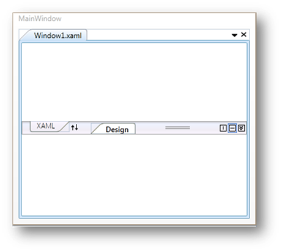

You can set the height of the BottomPanel in TabSplitter using BottomPanelHeight property. To set the height of the BottomPanel, refer the following code snippet:
|
[XAML]
<!-- Adding TabSplitter --> <syncfusion:TabSplitter BottomPanelHeight="150">
<!-- Adding TabSplitterItem --> <syncfusion:TabSplitterItem Header="MainWindow.xaml">
<!-- Adding TopPanelItems --> <syncfusion:TabSplitterItem.TopPanelItems>
<syncfusion:SplitterPage Header="Design" />
</syncfusion:TabSplitterItem.TopPanelItems>
<!-- Adding BottomPanelItems --> <syncfusion:TabSplitterItem.BottomPanelItems>
<syncfusion:SplitterPage Header="XAML"/>
</syncfusion:TabSplitterItem.BottomPanelItems>
</syncfusion:TabSplitterItem>
</syncfusion:TabSplitter> |
|
[C#]
// Creating an instance of TabSplitter TabSplitter tabSplitter = new TabSplitter();
//Setting BottomPanelHeight property tabSplitter.BottomPanelHeight = 150;
|

Figure 1020: TabSplitter with BottomPanelHeight property